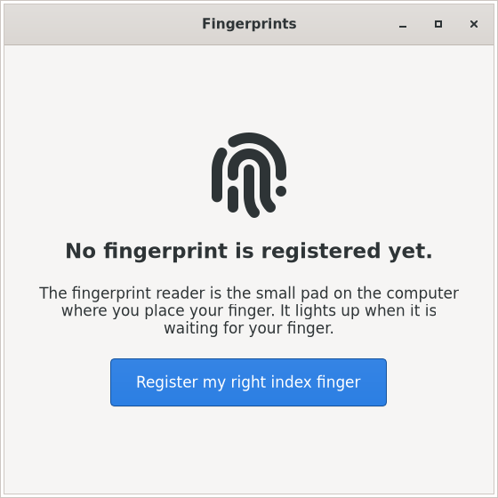

validity-rs
Fingerprint login on Linux for Synaptics/Validity match-on-chip readers. A drop-in, Rust replacement for fprintd's daemon, with a one-button app to register your finger.

What it does
- Speaks the reader's encrypted protocol itself: pairing, firmware, calibration, enrolment, matching. Fingerprints never leave the chip.
- Serves fprintd's D-Bus API, so
fprintd-enroll,fprintd-verifyand desktop tools keep working. - Optional login profile: the password always works; the finger is an extra way in, never the only one.
- Signed, attested packages; updates through
apt.
Supported
| Reader | 06cb:009a, tested on a ThinkPad T480 |
|---|---|
| APT | Debian 13, Ubuntu 26.04, Ubuntu 24.04 (service only) |
| Downloads | Fedora, Arch Linux, Alpine packages on the GitHub release |
Install on Debian 13
sudo apt install curl gpg
curl -fsSLO https://validity-rs.github.io/apt/validity-rs-archive-keyring.gpg
gpg --show-keys --with-fingerprint validity-rs-archive-keyring.gpg
# must show 59CB F35F 3147 A424 BE25 DF07 8F4B 8482 B486 C8FD
sudo install -m 0644 validity-rs-archive-keyring.gpg /usr/share/keyrings/
sudo curl -fsSL -o /etc/apt/sources.list.d/validity-rs.sources \
https://validity-rs.github.io/apt/validity-rs.sources
sudo apt update
sudo apt install validity-rs-archive-keyring validity-daemon fingerprint-settingsUbuntu and the other distributions: see the install guide.